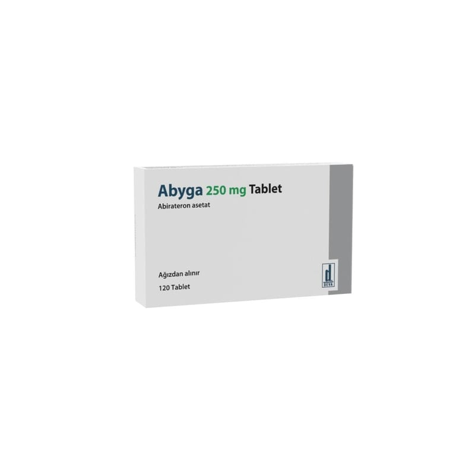

Abyga 250 mg Tablet, 120 Adet

Ne için kullanılır
KT · Bölüm 1 ABYGA, etkin madde olarak abirateron asetat içermektedir. ABYGA, yetişkin erkeklerde vücudun diğer yerlerine yayılmış prostat kanserini tedavi etmek için kullanılır. ABYGA vücudunuzun testosteron (androjen grubundan bir steroid hormonu olup, erkek cinsiyet hormonu olarak bilinir) üretmesini engeller ve bu şekilde prostat kanserinin büyümesini yavaşlatabilir. ABYGA, yetişkin erkeklerde prostat kanseri açısından metastaz gelişme (vücudun diğer bölgelerine yayılma) riski yüksek ancak henüz prostat dokusu ve/veya etrafındaki lenf düğümleri ile sınırlı hastalıkta ışın tedavisi ile birlikte kullanılır. ABYGA erkek cinsiyet hormonunu (testosteron) azaltan (androjen baskılama tedavisi) bir
tedavi ile birlikte prostat kanserinin hormon tedavisine yanıt verdiği erken döneminde verilmelidir. ABYGA yetişkin erkeklerde vücudun diğer bölgelerine yayılmış (metastaz yapmış) ve testosteronu düşüren tıbbi veya cerrahi tedaviye yanıt veren prostat kanserinin (metastatik hormona duyarlı prostat kanseri olarak da adlandırılır), yüksek hacimli grubunun (yani iç organlara yayılım yapmış olan veya en az bir tanesi omurga ya da leğen kemiği dışında kalan ≥ 4 kemiğe yayılım yapmış olan) tedavisinde dosetaksel isimli ilaç tedavisi ve testosteronu düşüren tıbbi tedavi ile birlikte kullanılır.
ABYGA’yı alırken doktorunuz size prednizon veya prednizolon adı verilen başka bir ilacı da birlikte reçeteleyecektir. Bu şekilde tansiyonunuzun yükselmesi, vücudunuzdaki su miktarının artması (sıvı tutulumu) ya da vücudunuzdaki potasyum adı verilen maddenin seviyesinin düşme riski azaltılacaktır.
ABYGA beyaz veya beyazımsı, oval biçimli bikonveks tablet şeklindedir. ABYGA tabletler bir kutu içerisinde 120 adet tablet içeren blister ambalajlarda kullanıma sunulmuştur.